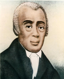

AME Church History
The AMEC grew out of the Free African Society (FAS) which Richard Allen, Absalom Jones, and others established in Philadelphia in 1787. When officials at St. George’s MEC pulled blacks off their knees while praying, FAS members discovered just how far American Methodists would go to enforce racial discrimination against African Americans. Hence, these members of St. George’s made plans to transform their mutual aid society into an African congregation. Although most wanted to affiliate with the Protestant Episcopal Church, Allen led a small group who resolved to remain Methodists. In 1794 Bethel AME was dedicated with Allen as pastor. To establish Bethel’s independence from interfering white Methodists, Allen, a former Delaware slave, successfully sued in the Pennsylvania courts in 1807 and 1815 for the right of his congregation to exist as an independent institution. Because black Methodists in other middle Atlantic comm unities encountered racism and desired religious autonomy, Allen called them to meet in Philadelphia to form a new Wesleyan denomination, the AME.
The geographical spread of the AMEC prior to the Civil War was mainly restricted to the Northeast and Midwest. Major congregations were established in Philadelphia, New York, Boston, Pittsburgh, Baltimore, Washington, DC, Cincinnati, Chicago, Detroit, and other large Blacksmith's Shop cities. Numerous northern communities also gained a substantial AME presence. Remarkably, the slave states of Maryland, Kentucky, Missouri, Louisiana, and, for a few years, South Carolina, became additional locations for AME congregations. The denomination reached the Pacific Coast in the early 1850’s with churches in Mother Bethel Church Stockton, Sacramento, San Francisco, and other places in California. Moreover, Bishop Morris Brown established the Canada Annual Conference.
The most significant era of denominational development occurred during the Civil War and Reconstruction. Oftentimes, with the permission of Union army officials AME clergy moved into the states of the collapsing Confederacy to pull newly freed slaves into their denomination. “I Seek My Brethren,” the title of an often repeated sermon that Theophilus G. Steward preached in South Carolina, became a clarion call to evangelize fellow blacks in Georgia, Florida, Alabama, Texas, and many other parts of the south. Hence, in 1880 AME membership reached 400,000 because of its rapid spread below the Mason-Dixon line . When Bishop Henry M. Turner pushed African Methodism across the Atlantic into Liberia and Sierra Leone in 1891 and into South Africa in 1896, the AME now laid claim to adherents on two continents.
While the AME is doctrinally Methodist, clergy, scholars, and lay persons have written important works which demonstrate the distinctive theology and praxis which have defined this Wesleyan body. Bishop Benjamin W. Arnett, in an address to the 1893
World’s Parliament of Religions, reminded the audience of the presence of blacks in the formation of Christianity. Bishop Benjamin T. Tanner wrote in 1895 in The Color of Solomon – What? that biblical scholars wrongly portrayed the son of David as a white man. In the post civil rights era theologians James H. Cone, Cecil W. Cone, and Jacqueline Grant who came out of the AME tradition critiqued Euro-centric Christianity and African American churches for their shortcomings in fully impacting the plight of those oppressed by racism, sexism, and economic disadvantage.
In the 1990s, the AME included over 2,000,000 members, 8000 ministers, and 7000 congregations in more than 30 nations in North and South America , Africa , and Europe. Twenty bishops and 12 general officers comprised the leadership of the denomination.